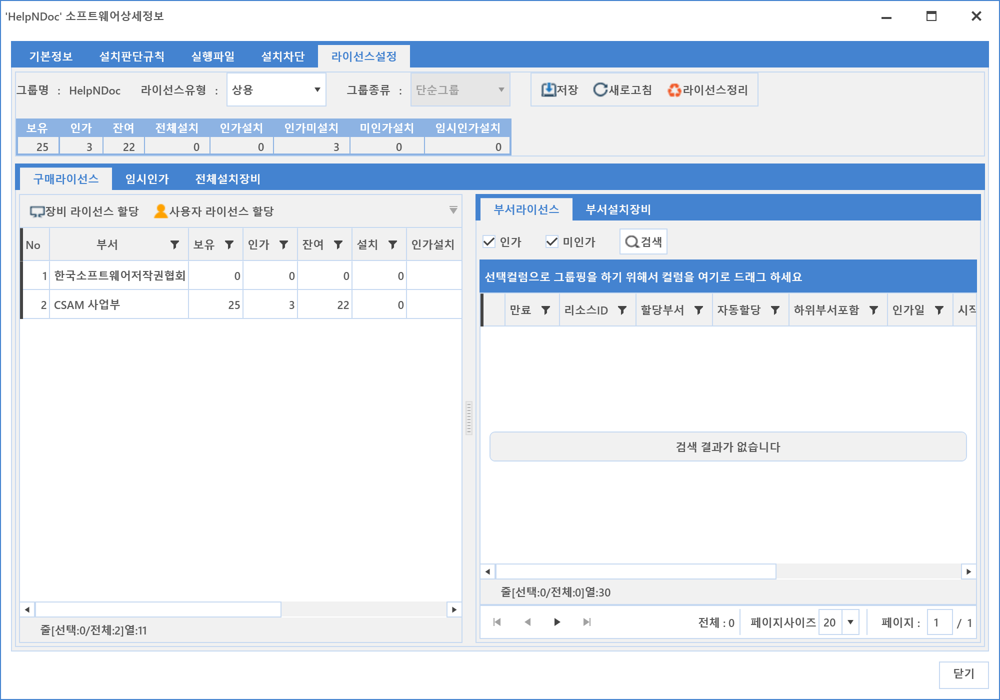

5-1-2-5. 라이선스 설정
5-1-2-5. 라이선스 설정
Source: https://www.sweeper.or.kr/etc/manual/5125.html
5-1-2-5. 라이선스 설정
5. 소프트웨어 ›› 5-1. 자산관리 ›› 5-1-2. SWDB ››


선택한 소프트웨어에 대한 유형을 설정하고, 라이선스 사용현황을 확인할 수 있으며, 필요시 라이선스 할당/회수도 가능합니다.

주요 버튼 설명
-
라이선스 유형
-
불법 : 무조건 불법으로 간주합니다.
- 상용 : 라이선스 할당 설정이 가능하며 할당받지 못한 소프트웨어 사용자는 불법이 됩니다.
- 프리웨어 : 라이선스 제한이 없는 무료 소프트웨어 설정입니다.
- 사이트 : 수량 제한 없는 라이선스 설정입니다. (EA 라이선스)
- 번들 : 번들 제품에 해당하는 라이선스타입으로, 프리웨어랑 동작이 유사합니다.
-
마이닝 : 인지되지 않은 SW를 검출하기 위한 유형으로, 불법이랑 동작이 유사합니다.
-
그룹종류
-
단순그룹 : 라이선스 관리는 개별적으로 하면서 수량만 합계를 구하기 위한 그룹입니다.
- 통합그룹 : 기업의 SW라이선스 계약형태가 SW사용에 대한 버전 제약이 없을 경우, 통합하여 사용하기 위한 그룹입니다.
- 패키지그룹 : MS OFFICE와 같이 특정 패키지를 구매시, 워드나 엑셀 같은 소프트웨어에 대한 사용권이 함께있는 경우에 사용하는 그룹입니다.
자세한 사항은 5-3-1. 그룹설정을 참고하시기 바랍니다.
-
라이선스정리
-
인사 변경등이 발생시, 할당한 라이선스를 자동 회수 합니다
-
장비라이선스 할당
-
소프트웨어 라이선스의 담당부서를 참고하여, 장비에 라이선스를 할당할 수 있습니다.
-
할당하려는 장비의 부서에 라이선스가 없다면, 라이선스 키가 나타나지 않습니다.
-
사용자 라이선스 할당
-
사용자에 라이선스를 할당할 수 있습니다.
- 사용자 부서에서 구매한 라이선스가 있는 경우, 해당 부서 사용자에게 라이선스를 할당할 수 있습니다.
- 하위부서 포함인 경우, 하위부서 사용자에게 할당 가능합니다.
주요 탭 설명
-
구매라이선스 탭
-
전체 구매 라이선스 현황을 부서가준으로 확인 할 수 있습니다.
-
임시인가 탭
-
임시라이선스를 할당한 전체 장비를 확인하거나, 우클릭 명령으로 장비에 임시라이선스를 할당/회수할 수 있습니다.
-
전체설치장비 탭
-
해당 소프트웨어를 설치한 전체 장비를 확인할 수 있으며, 정식(임시)라이선스를 할당/회수 할 수 있습니다.
-
부서라이선스 탭
-
구매라이선스탭에서 선택한 부서에 대한 발급가능한 라이선스를 확인 할 수 있고, 할당/회수/수정 할 수 있습니다.
-
부서설치장비 탭
-
구매라이선스탭에서 선택한 부서에 설치된 장비만을 보여주며, 정식(임시)라이선스를 할당/회수 할 수 있습니다.
© Copyright SWeeper Inc.. All Rights Reserved